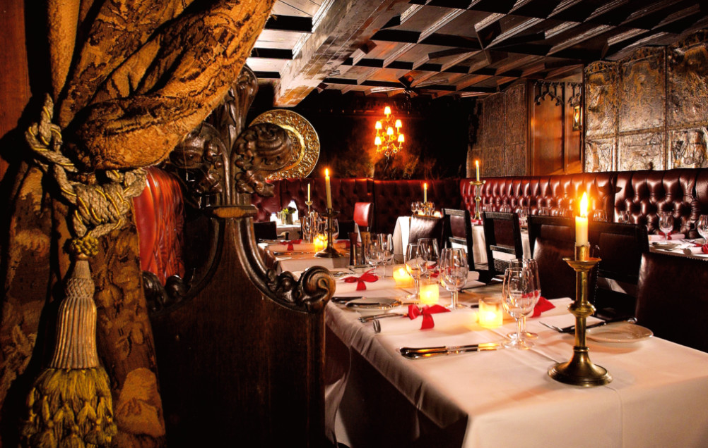
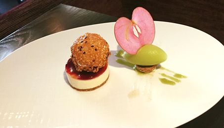
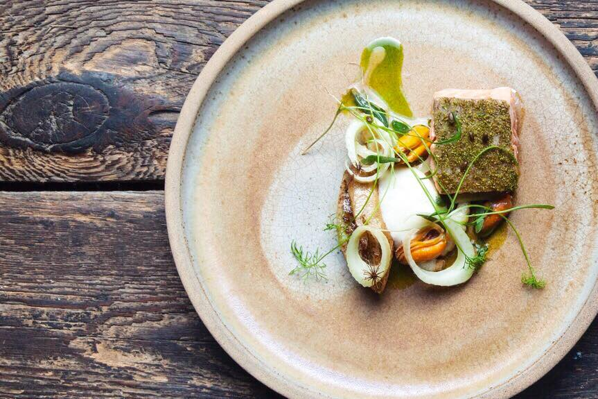

Near Edinburgh Castle for foods and drinks
Edinburgh Castle is the most famous landmark in Scotland's capital.
After a day of sightseeing, many visitors are in need of a convenient
yet luxurious restaurant in which to enjoy an evening meal.
The Witchery by the Castle
This boutique Gothic hotel is popular with Edinburgh residents, visitors and celebrities alike.
Andrew Lloyd Webber once asked “Is this the prettiest restaurant ever?” and we are inclined to agree.
The restaurant is housed in a 16th century merchant’s house, just at the gates of Edinburgh Castle.
The interior is decorated with carved oak panelling, antique candlesticks and tapestries.
The ceiling is painted with heraldry, reminiscent of the Auld Alliance with France.
But it is the food, of course, which takes centre stage.
Scottish produce is a must, comprising the finest seafood, beef, lamb and game that the country has to offer.
The Angus beef steak tartare is a particularly lavish dish. Vegetarians are sure to enjoy the fabulous courgette,
chickpea and tofu tagine.
Three courses cost £36.

Castle Terrace Restaurant
Dominic Jack is the head chef of this Michelin star establishment. Jack was trained in some of France’s finest
restaurants, including l’Arpège in Paris.
The restaurant was opened in 2010, and underwent a major refurbishment in 2016. The décor is characterised by
calming, neutral tones, with splashes of rich blues and golds. There is an impressive mural of Edinburgh Castle on
the wall, blending the ancient and the modern.
The Castle Terrace is the sister restaurant of The Kitchin, and they both have the same commendable motto: “From Nature to Plate”.
Locally sourced ingredients are cooked to perfection using classic French techniques. You can sample such delights
as monkfish, Ayrshire pork, or Inverurie lamb.
The surprise tasting menu costs £80.

Timberyard
The family-run Timberyard restaurant is the perfect place for those who are passionate about quality ingredients.
All the kitchen’s produce is from local artisan growers, breeders, suppliers and foragers.
Furthermore, the wines are from small European producers, and the herbs are from Timberyard’s own raised beds.
The building itself is an old brick warehouse, kitted out with a cosy wood-burning stove.
The dishes do not have names – the menu lets the ingredients speak for themselves.
Why not try some duck with parsnip, ramson, onion and black garlic? Or perhaps turbot, with celery, salsify, sea beet and artichoke?
The restaurant has of logs, rough wood tables and substantial pottery, which hint at the warehouse’s industrial origins.
A four course dinner costs £55, and paired drinks costs $40.